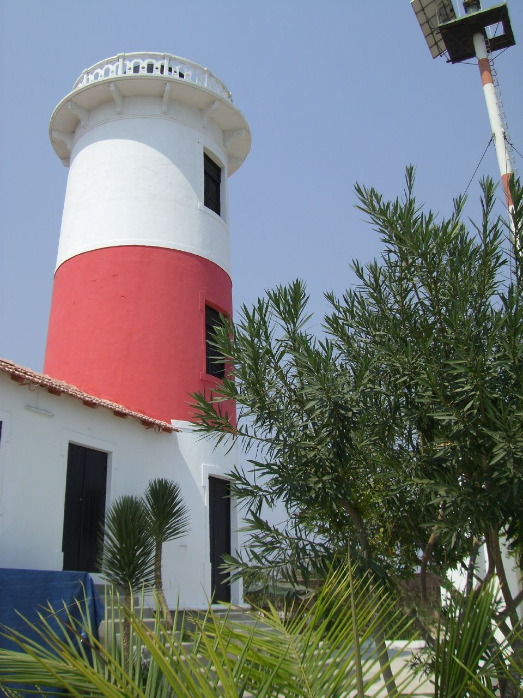

Cultura e monumentos · Lobito, Benguela
Farol do Lobito
Farol de 1915 no alto das escarpas, do lado leste da entrada do porto do Lobito, em frente à ponta da Restinga. É uma torre cilíndrica branca com uma larga faixa vermelha, restaurada entre 2004 e 2007. A torre não abre ao público e o acesso, a cerca de 14 km do centro do Lobito, é melhor de 4x4: confirme antes de ir.
Informação prática
- Horário
- Por confirmar
- Morada
- Lobito, Benguela
- Preço
- Preço por confirmar
Verificado a 11 de outubro de 2026. Fontes: Ver Angola (dezembro de 2020), Wikipedia. Confirme sempre antes de ir.
É o dono deste lugar? Atualize os dados no Tuende: telefone, horário, preços e fotos. É grátis e confirmamos consigo antes de publicar.
Perto daqui
- Luna Ocean Club · Restaurante · 1,4 km
- Restinga do Lobito · Praia · 1,6 km
- Zulu · Bar · 1,8 km
- Batuk Restaurante · Restaurante · 2,7 km
- Apart Hotel Aurora · Alojamento · 4,6 km
- Hotel Terminus · Alojamento · 5,0 km
Distâncias em linha reta.
Mais lugares em Benguela
- Baía Azul · Baía Azul, Benguela
- Praia Morena · Praia Morena, Benguela
- Igreja de Nossa Senhora do Pópulo · Centro, Benguela
- Museu Nacional de Arqueologia de Benguela · Centro, Benguela
- Reduto de São Pedro de Catumbela · Catumbela, Benguela
- Praia da Hanha · Hanha (Lobito), Benguela
- Aeroporto da Catumbela · Catumbela, Benguela
- Estádio Nacional de Ombaka · Benguela
Farol do Lobito — Culture and landmarks, Lobito, Benguela
A 1915 lighthouse at the entrance to Lobito Bay.
A 1915 lighthouse on top of the cliffs on the east side of the entrance to Lobito harbour, facing the tip of the Restinga. It is a white cylindrical tower with a wide red band, restored between 2004 and 2007. The tower is not open to the public and the access, about 14 km from central Lobito, is best by 4x4: check before you go.
Prices in Kwanza, opening hours and directions are in the Tuende app (Portuguese and English).